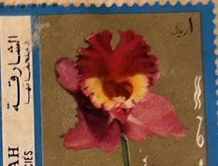
| SOURCE | TITLE| IMAGE MATCH | click to source page |
| How to I treat this fungus on my B. Nodosa Orchid | 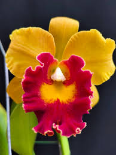 | |
| Taiwan emperor orchid plant characteristics | 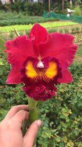 | |
| Phal. Mituo Gelb Eagle | 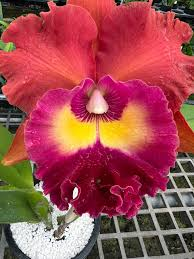 | |
| Water Orchids | Red & Purple - Water Orchids | 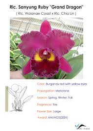 |
| My new Brassavola Nodosa, bloomed for the first time after growing from seedling। However, there is no fragrance ! CAN YOU PLEASE ADVICE why ? WHAT SHOULD I DO? | 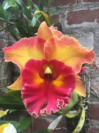 | |
| elizabatz.com | A Single Flower in Singapore | Albatz Travel Adventures | 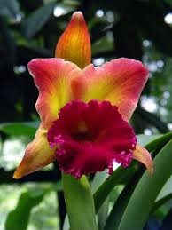 |
| ocos.net | Orange County Orchid Society | 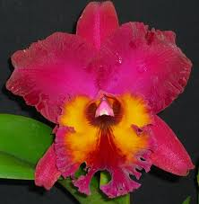 |
| OrchidRoots | Rhyncholaeliocattleya Yuan Dung Sunset - orchidroots | 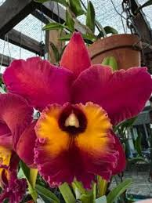 |
| Orchids.org | Orchid Hybrid: Potinara Chief Emperor | 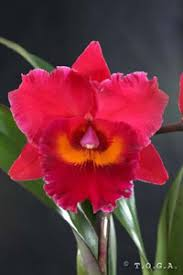 |
| La Foresta Orchids | Cattleya Alliance - Rlc. Hall of Fame – La Foresta Orchids | |
| Guna Orchids | Cattleya Orchids for Sale | Buy Cattleya Orchids Online | Guna Orchids 9/11 | 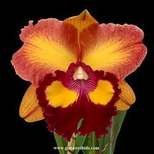 |
| Clowesetum 'Millwood Prima Donna' flower display | 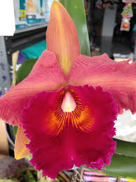 | |
| OrchidRoots | Rhyncholaeliocattleya Chief Emperor-Apricot Flare - orchidroots | 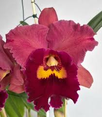 |
| OfferUp | Big Cattleya Orchid for Sale in Garden Grove, CA - OfferUp | 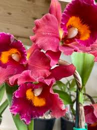 |
| University of Vermont | hummers and orchids | 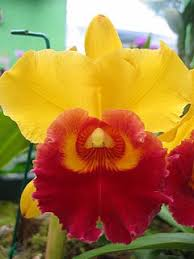 |
| ℙ𝕋ℙ𝔸😇. 𝔽𝕣𝕖𝕖 𝔻𝕖𝕝𝕚𝕧𝕖𝕣𝕪 𝕡𝕠. | 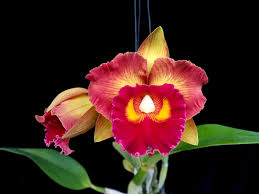 | |
| Cattleya Rlc. Rungnapha Fancy | 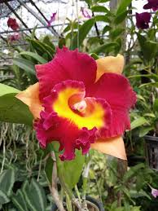 | |
| American Orchid Society | 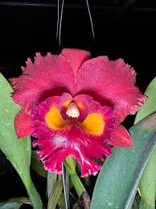 | |
| Students of the World | plants - Nature | 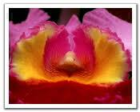 |
| Rlc Guanmian City' Black Flower' | 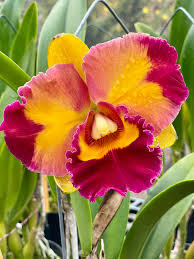 | |
| Cattleya Chao Praya Red Order now at Orchid-tree.com 🌺🔴 Unleash the Fiery Beauty of Cattleya Chao Praya Red! 🪴🔥 Introducing the captivating Cattleya Chao Praya Red, an orchid variety that ignites the | 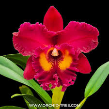 | |
| eBay | Red Orchids | eBay | 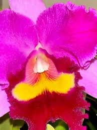 |
| OrchidRoots | Rhyncholaeliocattleya Chunfong Red - orchidroots | 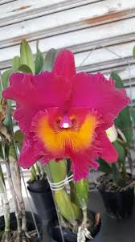 |
| Etsy | Fragrant. Blc. Chunyeah 'good Life' AM/AOS - Best Yellow Cattleya of Miami and New York International Orchid Show. Over 14 Cm Flower. - Etsy Israel | 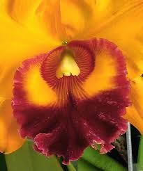 |
| Blc. Taiwan Queen 'Golden Monkey' | 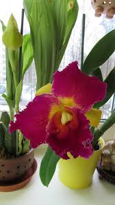 | |
| OrchidRoots | Rhyncholaeliocattleya Sun Bloom - orchidroots | 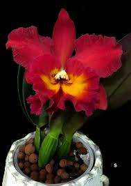 |
| Hawaiian orchid 'Florida Winter' blooming rapidly | ||
| Fine Art America | Frank Lane Framed Prints | Fine Art America | 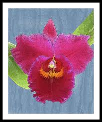 |
| Update: RIc.Nakornchaisri Delight 'No.2' | 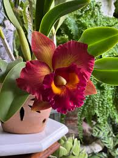 | |
| Red beauty ❤️ | 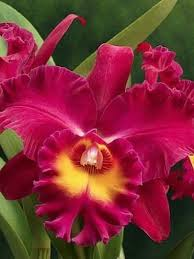 | |
| YouTube | Cattleya Siam Red Rlc.Siam Red - YouTube | 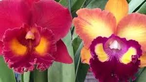 |
| TikTok | Jacinta Vargas (@jacinta.vargas889)'s videos with som original - Estação Sertaneja | TikTok | 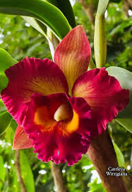 |
| Rlc. Nakornchaisri Delight 'T#2'. | 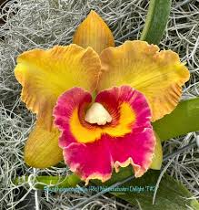 | |
| Rlc. Damrong Diamond ...plant from seed. | 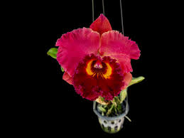 | |
| Rlc. Chief emperor "red tomatoes", young plant, first flowering. | 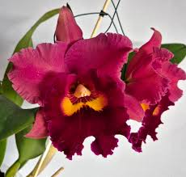 | |
| Dark blue daylily cross bloom | 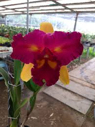 | |
| OrchidRoots | Rhyncholaeliocattleya Yuan Dung Volcanic - orchidroots | 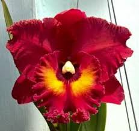 |
| Pretty Jessica #rose #prettyjessicarose #prettyjessica #roseflower #flowers | 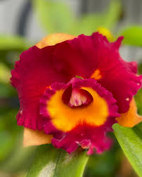 | |
| La Foresta Orchids | Cattleya Alliance - Rlc. Nakornchaisri Delight – La Foresta Orchids | 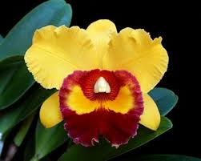 |
| Aloha Hawaii Orchids | Rlc Cattleya Lady Gaga Orchid Comes in 4" Pot – Aloha Hawaii Orchids | 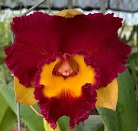 |
| Rlc. River Kwai Red = Rlc. Phet Paithoon x Korat Purple | 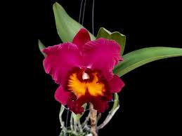 | |
| Rlc. Chomthong Fancy 'Fireball' AM/AOS is really a stunning flower. This plant stays very compact, but still sends out disproportionately large flowers that can get up to 6 inches wide. Check these | 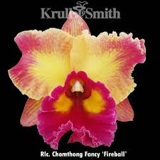 | |
| Dendrobium Firalin | 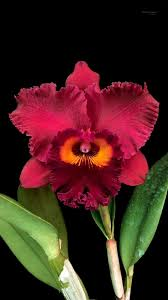 | |
| OrchidRoots | Rhyncholaeliocattleya STK Purple - orchidroots | 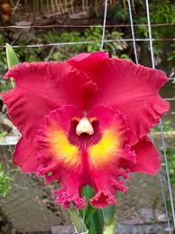 |
| 🌸🌸🌸🌸MY CHOICE FOR YOU.🌸🌸🌸🌸 | 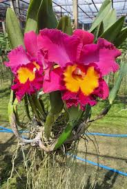 | |
| Currlin Orchideen | Rhyncholaeliocattleya Sanyung Ruby 'Guan Long' - Currlin Orchideen | 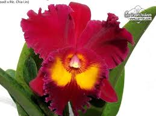 |
| Rhyncholaeliocattleya Mary Fisk https://ecuagenera.com/products/rhyncholaeliocattleya-mary-fisk?_pos=1&_psq=mary+fisk&_ss=e&_v=1.0 #orchids #orchidlover #orchid #rhyncholaeliocattleya #rhyncholaeliocattleyaorchid | 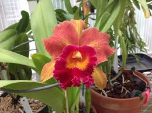 | |
| La Foresta Orchids | Cattleya Classics Orchids – La Foresta Orchids | 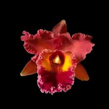 |
| OrchidRoots | Rhyncholaeliocattleya Anneville - orchidroots | 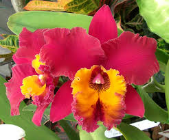 |
| Rlc. Chomthong Fancy fully established, flowering now. $225. #availablenow #OrchidObsession #feedtheorchidobsession #scentedorchids | 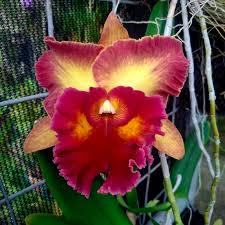 | |
| orchidkb.com | Kasem Boonchoo Orchid Nursery, Thailand - Orchids (Dendrobium, Cattleya, Oncidium, Ascocenda, Vanda, Aranda, Mokara,Thai species) nursery and tropical flowers and plants grower and exporter | 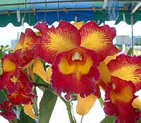 |
| Orchid 'carrot' has bloomed in Tainan city | ||
| Gorgeous cattleya from Lia Kadirullah's collection. | ||
| OrchidRoots | Rhyncholaeliocattleya Memoria Jose Molina - orchidroots | |
| La Foresta Orchids | All Orchids – La Foresta Orchids | |
| Redbubble | Orchid, Singapore" Graphic T-Shirt for Sale by crazymunchkin | Redbubble | |
| Carrboro Tropicals | Rlc Thaksina Rose - Carrboro Tropicals | |
| New Hybrid Rlc Golden Llewellyn x Rlc Chunyeah “10” | ||
| Flickr | wq6eye6jbis | Flickr |